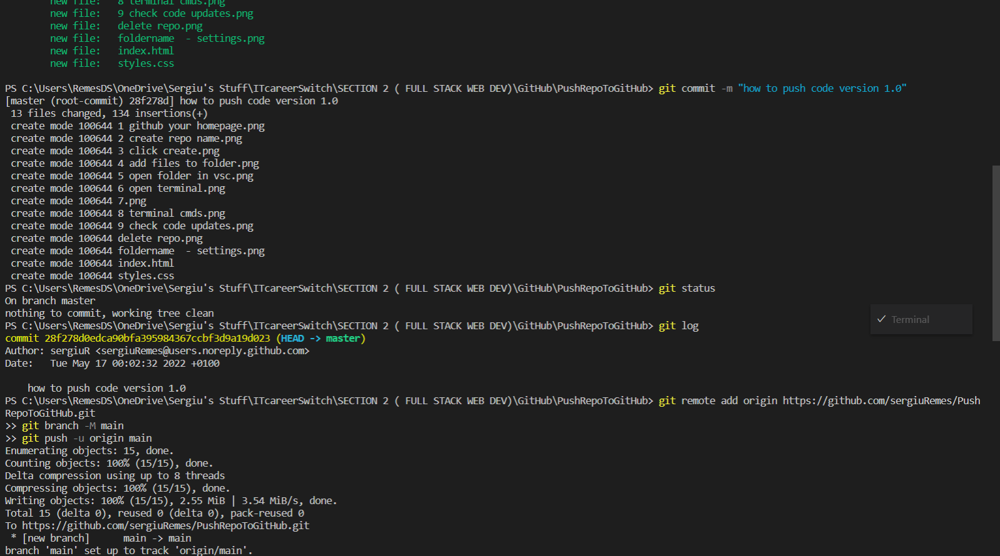
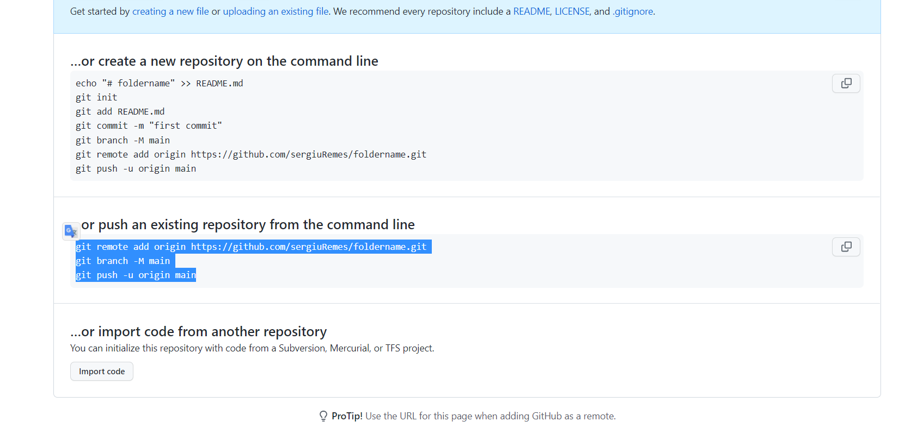

How to push repository to GitHub
Go to your GitHub home page.
Click on your profile icon, then click Your repositories.

Create your folder name by typing in the Repository name* tag your "FolderName".
( This needs to match your folder name from your PC. )

Click on the Create repository button
Now go to your local folder.

Here you either can have an empty folder, or a folder containing a working project.
Either way, you can still add now ( or later through command line ) the files that you would like to publish on GitHub.

Open your working directory in your code editor. ( I am using VirtualStudioCode Insiders )

Open the terminal in VirtualStudioCode. ( or other Command Prompt )

Attention! If you did not open the terminal in VirtualStudioCode, then you have to make sure that your root is in the your"FolderName". (ex: C:\MyProjects\FolderName )
Start with git init to initialize the repository.
Using the command "git status" you can anytime check the status of your repository.
Now you want to type "git add
Commit your work and use a 'status message' to log the state of your project by typing "git commit -m"your message"".
Using "git log" will show you the status of your work.
Copy the 3 lines of code from the..or push an existing repository from the command line tag. Can copy one by one or all together.
Paste the commands in the terminal and press ENTER. Now you will see the text Your branch is up to date with 'origin/main'. Nothing to commit, working tree clean..
That message means that your folder and it's contents has been 'commited' to the repository.
AND NOW THE MAGIC.
But what if your folder was empty when you 'commited' your repository? Let say it was, then you created your files and did some work. Now you want to 'publish' it.
Just open back the terminal in your ( root ) working directory
You can check your project status with "git status" command. Marked with red you will see all the files that have been modified ( including added/deleted ) since your last commit.
Using "git add

Wondering how to delete a repository pushed by mistake or unwanted?
Click on "Your profile icon"/Your repositories/"unwanted repo name"
Click on Settings
Scroll down to the bottom of the page...

...where you will find "Delete this repository" button. On click you will be asked for a security password and that's it.
You just learned how to publish and how to delete a repository using command line.